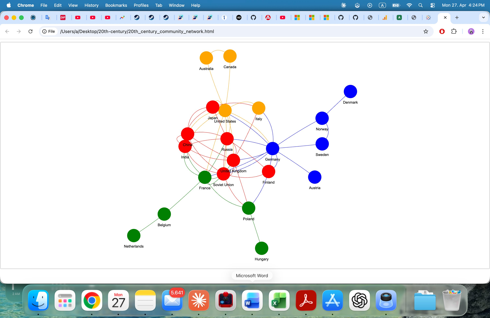
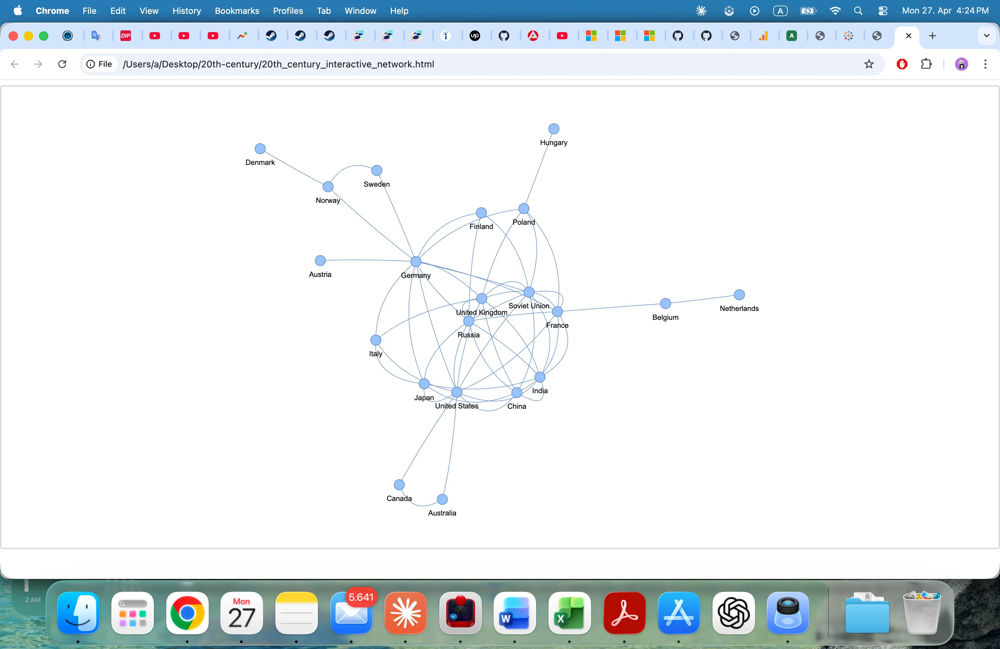

Textmining & Netzwerkanalyse — 20. Jahrhundert
Python · Selenium · NLTK · TextBlob · spaCy · NER · NetzwerkgraphenProjektübersicht
Dieses End-to-End-NLP-Projekt scrapt einen Wikipedia-Artikel über das 20. Jahrhundert, führt Textmining und linguistische Analysen durch und nutzt Named Entity Recognition (NER), um Länderkookkurrenzen zu extrahieren und einen interaktiven Netzwerkgraphen zu erstellen.
Phase 1 — Web-Scraping mit Selenium
Selenium mit ChromeDriver wurde verwendet, um den vollständigen Text des Wikipedia-Artikels "20. Jahrhundert" programmatisch zu scrapen. Der Rohtext erforderte eine Bereinigung, um Navigationselemente und Metadaten zu entfernen.
# Wikipedia-Seitentext mit Selenium scrapen
from selenium import webdriver
from selenium.webdriver.common.by import By
driver = webdriver.Chrome()
driver.get("https://en.wikipedia.org/wiki/20th_century")
text = driver.find_element(By.ID, "mw-content-text").text
driver.quit()
Phase 2 — Textmining mit NLTK & TextBlob
- Worthäufigkeitsanalyse vor und nach Stoppwortentfernung — "war", "world" und "soviet" dominierten
- Part-of-Speech-Tagging mit TextBlob zur Identifikation von Nomen, Verben und Eigennamen
- Extraktion der häufigsten 15 Nomen zur Aufdeckung historischer Kernthemen
Phase 3 — Named Entity Recognition (NER) mit spaCy
spaCys en_core_web_sm-Modell wurde zur Extraktion geopolitischer Entitäten (GPE-Tags) aus jedem Satz eingesetzt. Entitäts-Aliase wurden normalisiert — "UK", "U.K." und "Britain" wurden alle auf "United Kingdom" gemappt.
Phase 4 — Länder-Kookkurrenz-Netzwerk


Zentrale Erkenntnisse
- Nach Stoppwortentfernung dominierten "war", "world", "soviet", "united" und "states"
- USA, Sowjetunion, Deutschland und UK bildeten den dichtesten Cluster
- Kookkurrenzmuster spiegeln bekannte geopolitische Beziehungen wider
- Alias-Normalisierung war entscheidend für konsistente Entitätszählung
Fazit
Dieses Projekt demonstriert die vollständige NLP-Pipeline von Rohdaten bis zur Erkenntnis. Die Netzwerkvisualisierung macht eine abstrakte Frage — "Welche Länder waren im 20. Jahrhundert am stärksten historisch verbunden?" — unmittelbar und intuitiv beantwortbar.